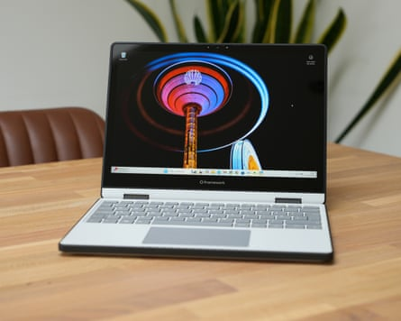
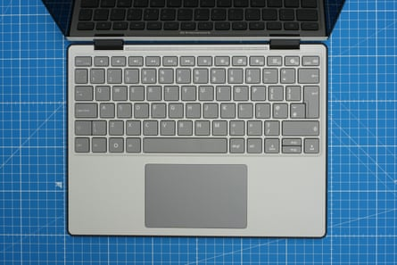
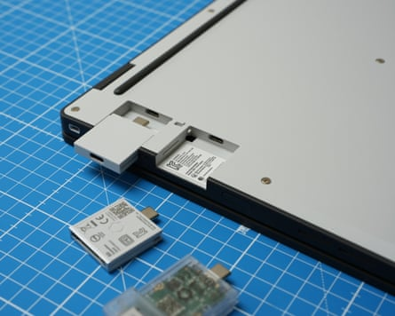
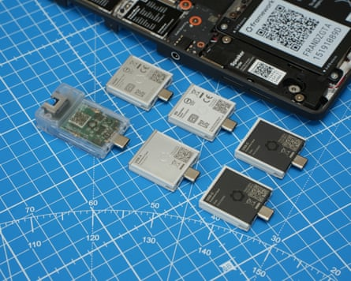
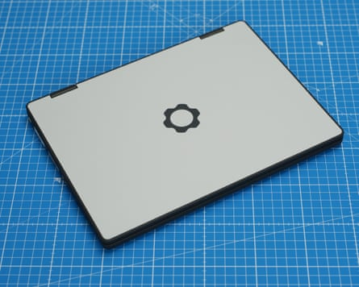
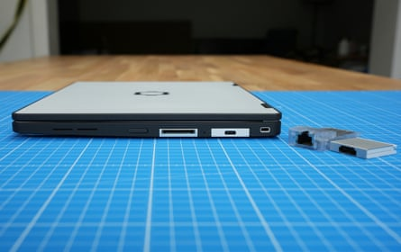

The modular and repairable PC maker Framework’s latest machine moves into the notoriously difficult to fix 2-in-1 category with a fun 12in laptop with a touchscreen and a 360-degree hinge.
The new machine still supports the company’s innovative expansion cards for swapping the different ports in the side, which are cross-compatible with the Framework 13 and 16 among others. And you can still open it up to replace the memory, storage and internal components with a few simple screws.
The Framework 12 is available in either DIY form, starting at £499 (€569/$549/A$909), or more conventional prebuilt models starting at £749. It sits under the £799-and-up Laptop 13 and £1,399 Laptop 16 as the company’s most compact and affordable model.
The compact notebook is available in a range of two-tone colours, not just grey and black.Photograph: Samuel Gibbs/The Guardian
Where the Laptop 13 is a premium-looking machine, the Laptop 12 is unmistakably chunky and rugged with over-moulded plastic parts for shock protection. It is designed to meet the MIL-STD-810 standard common to rugged electronics. It looks and feels as if it could take a beating, not like a flimsy DIY kit you put together yourself.
The glossy 12.2in screen is bright and relatively sharp. But it is highly reflective, has large black bezels around it and has a relatively narrow colour gamut, which means colours look a little muted. It’s decent enough for productivity but not great for photo editing. The touchscreen rotates all the way back on to the bottom of the machine to turn it into a tablet or it can be folded like a tent or parallel to the keyboard. The screen supports the use of a wide range of first and third-party styluses for drawing or notes, which could make it handy in the classroom.
A selection of fun colours are available for the DIY version, further enhancing its college appeal. The 1080p webcam at the top is decent, although it won’t rival a Surface, and it has a physical privacy switch alongside the mics. The stereo speakers are loud and distortion-free but lack bass and a little clarity, sounding a little hollow compared with the best on the market.
The keyboard is nicely spaced, fairly quiet and pretty good to type on but lacks a backlight.Photograph: Samuel Gibbs/The Guardian
At 1.3kg the Laptop 12 isn’t featherweight but it is nice and compact, easy to fit in bags or on small desks. The generous mechanical trackpad is precise and works well. But the laptop lacks any form of biometrics, with no fingerprint or face recognition, forcing you to enter a pin or password every time you open the laptop or to use secure apps such as password managers, which gets old fast.
Specifications
- Screen: 12.2in LCD 1920x1200 (60Hz; 186PPI)
- Processor: Intel Core i3 or i5 (U-series, 13th gen)
- RAM: 8 or 16GB (up to 48GB)
- Storage: 512GB (up to 2TB)
- Operating system: Windows 11 or Linux
- Camera: 1080p front-facing
- Connectivity: wifi 6E, Bluetooth 5.3, headphones + choice of 4 ports: USB-C, USB-A, HDMI, DisplayPort, ethernet, microSD, SD
- Dimensions: 287 x 213.9 x 18.5mm
- Weight: 1.3kg
Modular ports and performance
The expansion modules slide into sockets in the underside of the laptop to change the ports, which you can change at any time.Photograph: Samuel Gibbs/The Guardian
The Laptop 12 comes with a choice of two Intel 13-generation U-series processors, which are lower-power chips from a few years ago. As tested with the mid-range i5-1334U it won’t win any raw performance awards but was generally up to the task of more than basic computing. It feels responsive in day-to-day tasks but struggles a bit in longer, processor-heavy jobs such as converting video.
The older chip means the battery life is a little on the short side for 2025, lasting about seven to eight hours of light office-based work using browsers, word processors, note-taking apps and email. Use more demanding apps and the battery life shrinks by a few hours. The battery takes about 100 minutes to fully charge using a 60W or greater USB-C power adaptor.
Four expansion cards can be fitted at any one time, but they can be swapped in and out without having to turn off the laptop.Photograph: Samuel Gibbs/The Guardian
The port selection is entirely customisable with a fixed headphone jack and four slots for expansion cards, which are available in a choice of USB-A and USB-C, DisplayPort and HDMI, microSD and SD card readers, or ethernet. Other cards can add up to 1TB of storage and the USB-C cards are available in a range of solid or translucent colours to make things even brighter. It is an excellent system but note the Laptop 12 supports only USB 3.2 Gen 2, not the faster USB4/Thunderbolt common on new machines.
Sustainability
The high-quality plastic body with over-moulded sides feels well built and durable.Photograph: Samuel Gibbs/The Guardian
Framework rates the battery to maintain at least 80% of its original capacity for at least 1,000 full charge cycles. It can easily be replaced along with all the rest of the components , including the RAM and SSD.
Framework sells replacement parts and upgrades through its marketplace but also supports third-party parts. The laptop contains recycled plastic in many components.
Price
The DIY edition of the Framework 12 starts at £499 (€569/ $549 / A$909 ) with pre-built systems starting at £749 (€849/ $799 / A$1,369 ) with Windows 11.
For comparison, the DIY Framework 13 costs from £799 and the DIY Framework 16 costs from £1,399 . Similarly specced 2-in-1 Windows machines start at about £500.
Verdict
Like previous Framework machines, the Laptop 12 demonstrates that repairable, upgradable and adaptable computers are possible, work well and can be used by more than just the tech savvy. It manages to be fun in a way most mid-range PCs just aren’t.
The keyboard is solid, the trackpad good and the speakers loud. The modular ports are a killer feature that every PC should embrace, while being able to repair or upgrade it easily is still so unusual. The touchscreen is bright but unremarkable, the lack of any biometrics is irritating, and the older processor, while still decently fast for everyday tasks, means the battery life isn’t long by modern standards.
Its biggest problem is cost, as it is about £150-£200 more expensive than similarly specced but closed and locked-down machines. Unless you already have spare storage and RAM lying around, that’s the price you have to pay for the open and modular machine.
Pros: swappable ports, repairable and upgradeable, fun and durable design, compact, lots of colour choices, solid keyboard and trackpad, solid performance for everyday tasks. Cons: battery life short of best, screen is bright but a little lacklustre, no biometrics, expensive, older processor, wait time for purchases.
The ports can be colour matched to the body or mixed and matched for fun combinations.Photograph: Samuel Gibbs/The Guardian